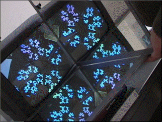

Purpose To understand some of the dynamical processes underlying videofeedback; to recognize videofeedback with mirrors as a form of IFS.
Material A videocamera, monitor, and cables, two mirrors and some method of supporting them, pieces of paper tape, a ruler and protractor, and an IFS program.
Background The basic setup of of videofeedback, a survey of some previous work, and a review of the IFS methods we shall use.
Sample Practice problems with no, one, and two mirrors.
Conclusion The more familiar form of video feedback involves dynamical behavior, analogous to the Wolfram classes of cellular automaton behavior. Using mirrors we can produce stable fractal videofeedback patterns. This form of videofeedback is equivalent to a special class of IFS.